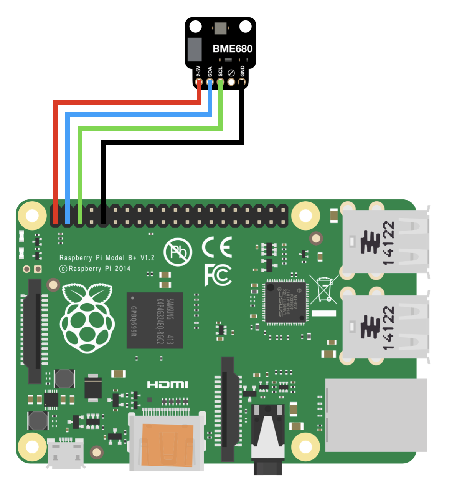
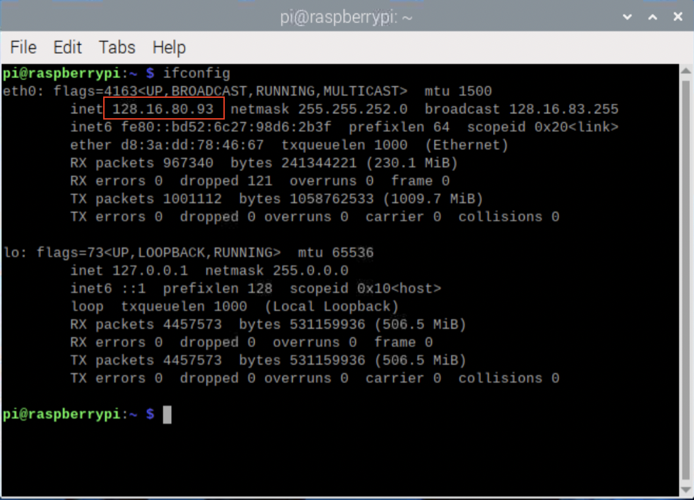

Deployment Manual
Deployment of our project is done using the following steps:
Hardware
- Connect the BME680 sensor to the Raspberry Pi via jumper wires using the given pinout diagram:

- Next, connect the olfactometer to the Raspberry Pi via USB to any port.
- Hardware setup is complete!
Software
- Firstly, access the desktop of your Raspberry Pi, either using an HDMI display with a keyboard and mouse, or some third-party screen viewing software such as VNCViewer.
- On the raspberry pi, clone the repository from GitHub by typing the following command in the terminal:
git clone https://github.com/OW-SmellDigital/bme680-sensor (Note that this is a private repository so you need to have access to it)
- Next, change the current directory to the newly created project directory by:
cd bme680-sensor
- Install the required libraries using the following command:
pip install -r requirements.txt
- Before running the main script, set any important constants in
src/setUp/constants.py, such as which USB port the olfactometer is connected to.
- Finally, run the web server by typing the following command in the terminal:
python3 src/app.py
- The web server should now be running and you can access the web interface by typing the IP address of the Raspberry Pi in a web browser on any device connected to the same network, or going to
127.0.0.1:5000 in the browser of the the Raspberry Pi itself.
- If you don't know the local IP address of your Raspberry Pi, you can obtain it by entering the command
ifconfig in the terminal, as shown in the below image (the local IP is highlighted).
